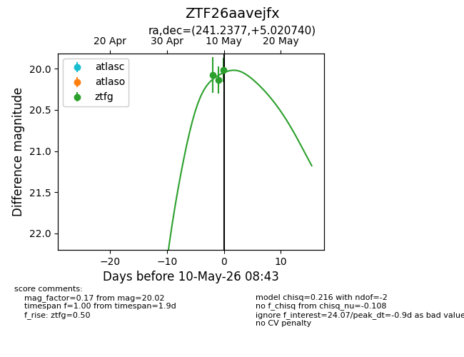
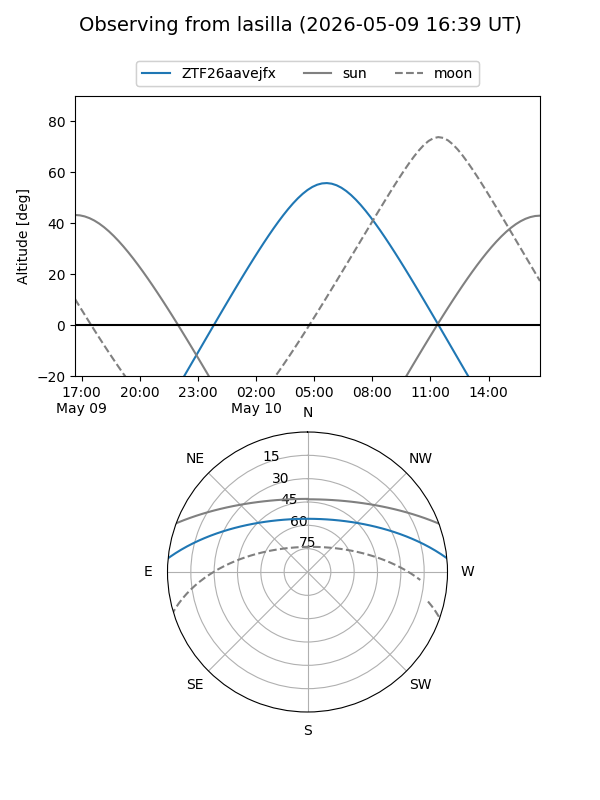
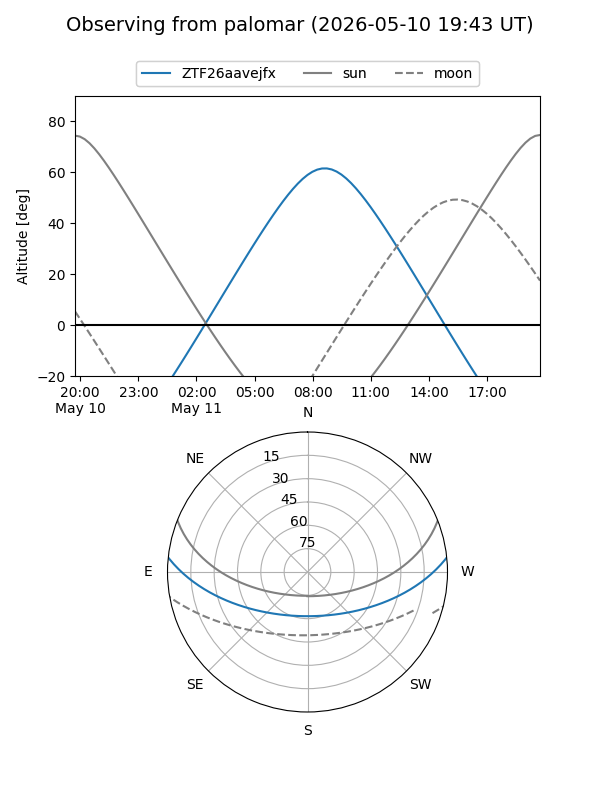
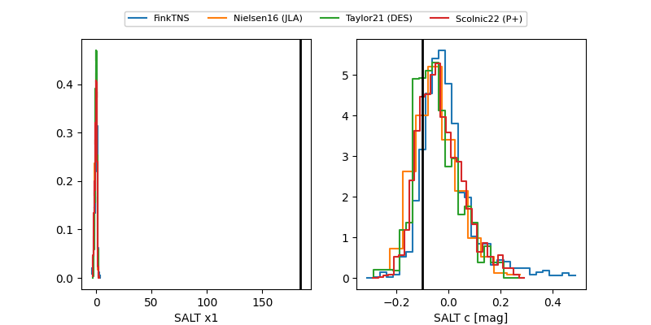

ZTF26aavejfx
Target ZTF26aavejfx at 2026-05-10 08:46
Aliases and brokers:
FINK: link
Lasair: link
ALeRCE: link
alt names
ZTF26aavejfx (ztf,fink_ztf)
Coordinates:
equatorial (ra, dec) = 241.2377,+5.02074
equatorial (HMS+DMS) = 16:04:57.05,+05:01:14.66
galactic (l, b) = (16.2034,+38.95997)
Flags:
Photometry:
last ztfg=20.02
3 ztfg detections
Lightcurve

Visibility


Additional plots
